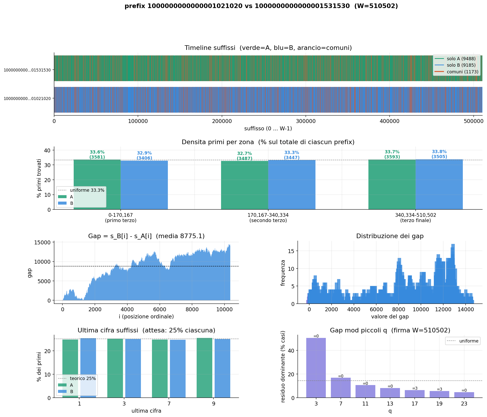

A segmented GC-60 sieve for deterministic prime window analysis beyond 10¹⁹ — the conventional int64 ceiling. First public benchmarks up to 10²⁶ (27 digits) on consumer laptop hardware.
microprime_suffix analyses the distribution of prime numbers inside two arbitrary windows placed anywhere on the number line — including heights unreachable by conventional sieves.
The central concept is the suffix: given a window of width W starting at address A, the suffix of a prime p found inside that window is simply p − A. It measures the prime's position relative to the start of the window, independently of where the window sits on the number line.
The segmented sieve of Eratosthenes is well-studied up to approximately 10¹⁹ — the int64 limit of tools such as Kim Walisch's primesieve. Beyond that threshold, no public benchmarks exist.
The last published results for high-altitude window sieves date back to Tomás Oliveira e Silva (University of Aveiro, Portugal, ~2010), measured on an Athlon 900 MHz single-thread processor. A systematic literature review published in MDPI Algorithms (April 2024) concluded:
"The systematic generation of prime numbers has been almost ignored since the 1990s. Sieve techniques are currently used mainly for didactic purposes, and no significant advances have been identified in the last 20 years."
This repository sits precisely in that gap — with original empirical measurements up to 10²⁶ (27 digits) on modern consumer hardware.
All benchmarks were measured empirically on real hardware — not estimated. Note that this is a mobile laptop processor, not a workstation or server. Reported times are therefore conservative.
Times scale with √10 ≈ 3.16 per decade — exactly as predicted by theory for a segmented sieve. The measured data confirms this proportionality with excellent precision. microprime_2 computes one window (W = 10,000,000); microprime_suffix computes two windows (W = 100,000) and takes ~16% longer due to the second window overhead.
| Scale | Digits | GC-60 cycles | microprime_2 | microprime_suffix |
|---|---|---|---|---|
| 1e19 | 20 | 1,273 | ~2 sec | 2.4 sec |
| 1e20 | 21 | 4,023 | ~6 sec | 7.3 sec |
| 1e21 | 22 | 12,717 | ~20 sec | 24.5 sec |
| 1e22 | 23 | 40,212 | ~70 sec | 86 sec |
| 1e23 | 24 | 127,158 | ~280 sec | 328 sec |
| 1e24 | 25 | 402,106 | ~1,050 sec | 1,216 sec |
| 1e25 | 26 | 1,271,567 | 4,003 sec (~67 min) | 4,635 sec (~77 min) |
| 1e26 | 27 | 4,021,045 | 17,600 sec (~4.9 h) | ~20,300 sec (~5.6 h) |
For each experiment, the Python script analisi_suffix.py generates
a six-panel chart from the CSV output. Below is a real example comparing two windows
at prefix 10¹⁶ with W = 510,502.

Each chart contains six panels:
Comparing two windows A and B of width W, suffix analysis reveals three distinct patterns in the gap curve (s_B[i] − s_A[i]):
The program writes results to a fixed path on Windows.
Define your experiments. Supports 10^N, 2^N, and arbitrary integers up to 10³⁸ (__int128).
Results are written to C:\dati_suffix\suffix_data_N.csv — one file per experiment, numbered in order.
PNG charts are generated automatically for every CSV found in the output folder. No arguments needed.
Source code, precompiled executable, and technical guide are available on GitHub and archived on Zenodo.